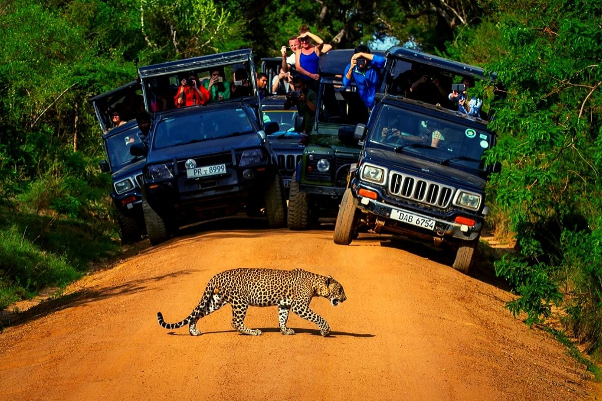
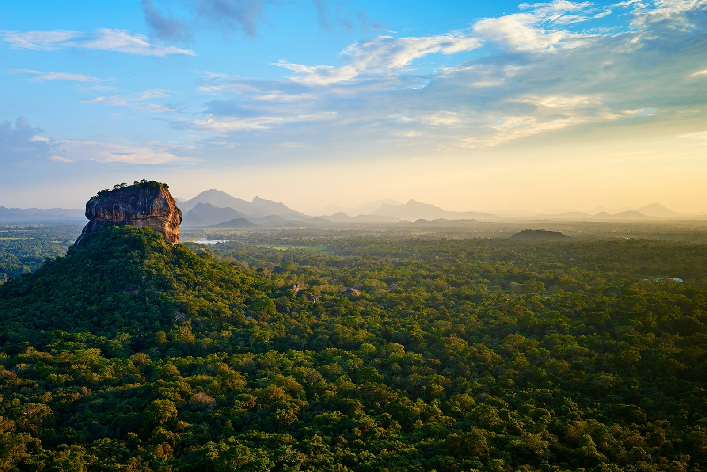
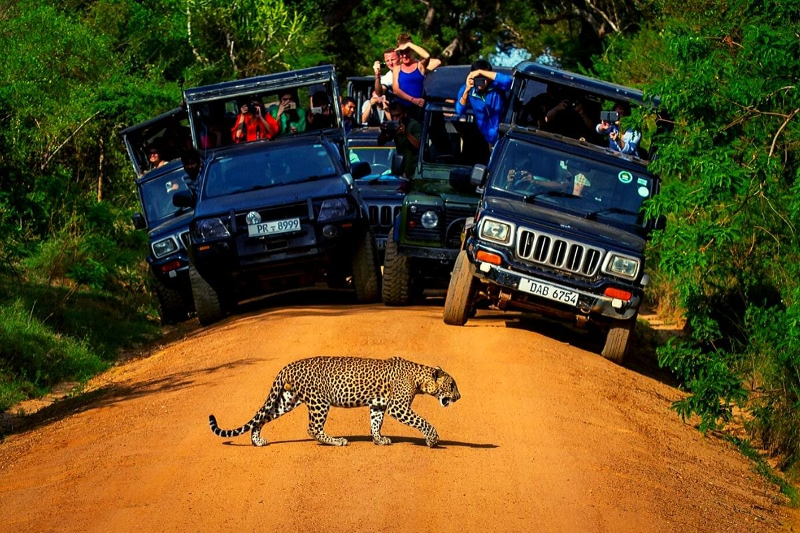
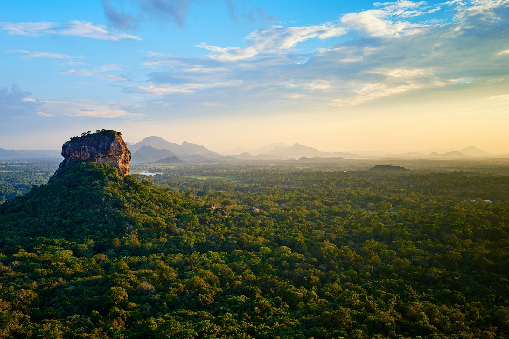

Yala National Park is Sri Lanka's most popular wildlife park due to the presence of many leopards. It has a variety of ecologies, including dry forests, thorn jungles, semi-deciduous forests, marine wetlands, fresh water, and sand beaches. Yala National Park is largely a dry zone covering Sri Lanka's southeastern areas. Yala National Park in particular is popular with tourists due to its wide diversity of wildlife, which includes herds of elephants, crocodiles, deer, monkeys, buffaloes, birds, sloth bears, leopards, and many more.
| Wildlife Safari | Fishing |
| Wildlife Camping | Tour |
| Bird Watching | Sightseeing |


Take a private safari, soft-top 4x4 to the park in Yala National Park at dawn, dusk, or throughout the day with a knowledgeable guide to look for gorgeous animals. Your guide will give you information about the many species and their habitats while you search for the park's elusive animals, and other wildlife.

Experience a real wildlife experience that includes sleeping in utter comfort beneath a canvas roof amid beautiful jungle scenery, dining under the stars to the music of a roaring campfire, indulging in native cuisine, going on fascinating bush walks, and meeting the locals.

Yala is also one of the 70 'Important Bird Areas' in Sri Lanka. About 215 bird species reside or visit the park, of which seven are endemic to Sri Lanka: the Sri Lankan grey hornbill, black-capped bulbul, Sri Lanka junglefowl, crimson-fronted barbet, blue-tailed bee-eater, Sri Lanka wood pigeon, and last but not least, the brown-capped babbler. Yala National Park is a must-see location for ardent birdwatchers while in Sri Lanka.
The region is home to a myriad of water bodies and catchment areas that thrives with fish that are edible. Participate in fishing in a tank surrounded by natural beauty. There are several water bodies and catchment regions in the area where edible fish are abundant. Get aboard a traditional fishing vessel and engage in fishing while surrounded by stunning natural scenery.

This trail enables you to have an incredible birding experience along with the interaction of local community. We will go by local shops, tiny irrigation tanks, temples, and residences in the villages. where you may gain a variety of experiences. A different experience would be to stop by a village house and enjoy the kind hospitality of the people there.
Deep among the Yala National Park's natural ecosystems sits Sithulpawwa, an old Buddhist monastery. The cave paintings at Sithulpawwa are among its most intriguing features. Similar to those from the Anuradhapura period, the paintings are on the plastered cave walls.

 





Copyright © All Rights Reserved.